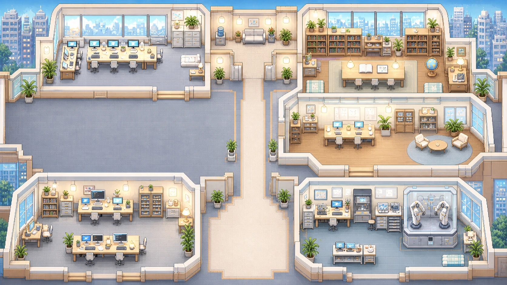

GRAPHORI
Waiting to connect
Execution graph
Ready

GRAPHORI
Live Office
Enter a run ID to see recorded progress in the office.
Run ID
Connect
View sample office
Waiting for a run ID.
A* Path Inspector
경로를 선택하세요.
출발 작업자
목적지
경로 보기
실제 이동
3개 경로 함께 보기
기획 → 검증
정보조사 → 구현
설계 → 기획